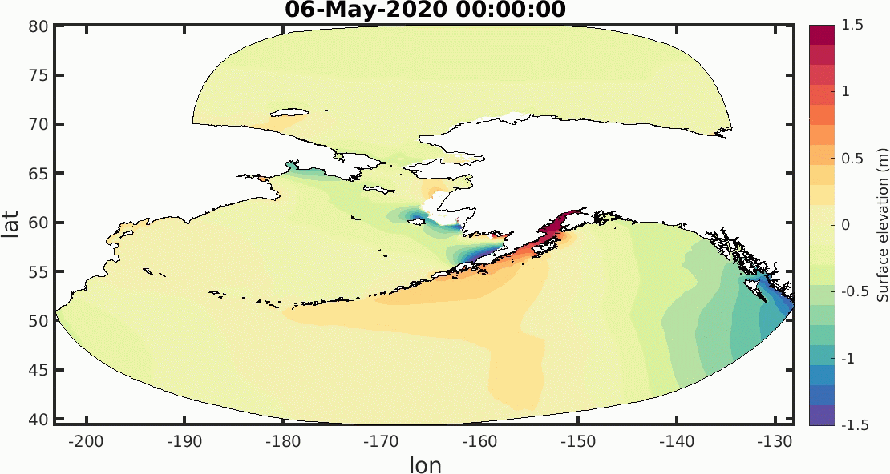
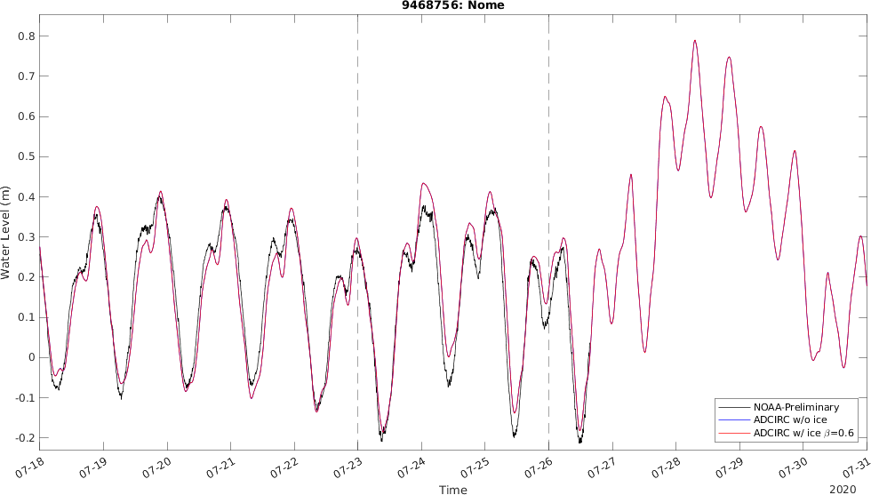
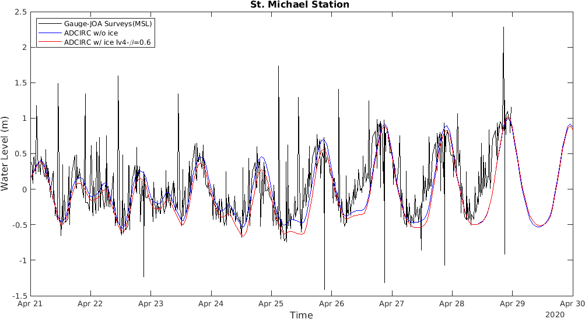

DISCLAIMER: this model is under development and testing, for study only.
NOTES: The animations (5, 6, 7, 8) and the maximum surface elevation image (9) in this pages are updated manually for the present, might not be updated everyday, but it is in plan to set up updating automatically for the future.
Forcing 8 harmonic constituents on open ocean boundaries, 4 semi-diurnal : M2, N2, S2, K2; 4 diurnal : K1, Q1, O1, P1.
Reanalysis wind and ice products: https://nomads.ncdc.noaa.gov/data/gfsanl/;
Forecast wind and ice products: https://www.ftp.ncep.noaa.gov/data/nccf/com/gfs/prod/.
Simulation for 18 days, the first 10 days is using reanalysis met data and the last 8 days using forecast data. Spin up for 5 days, and dt=2s.


Animetion, 6 hourly output.
Note: the comparion results started from 8 days before the present date, in the following plots, including 5 days hindcast validation, 3 days gap forecast results and 5 days forecast results. Except the St. Michael station, the results of the other stations are updated automatically on the morning of everyday.
Nome station recovered from 04-29-2020, https://tidesandcurrents.noaa.gov/stationhome.html?id=9468756.
Gauge data is from JOA Surveys, LLC (http://joasurveys.com/rtwl/stmichael/), without filtering, raw data subtracts MSL(8.45m).
